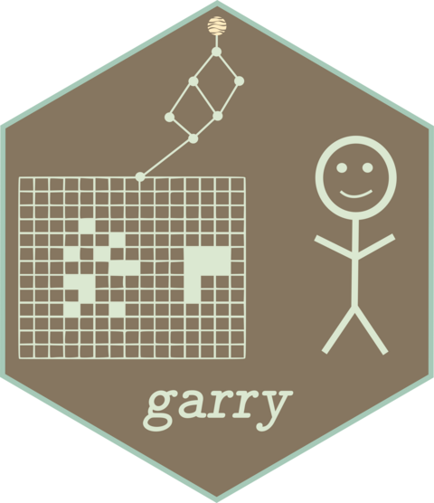

Changelog
garry 0.2.0
Breaking changes
-
geomedian(),medoid()and custom reducers declaringf32over a band stack of time stacks take the direct route, so warped cells move. On small HLS a warped geomedian moved by a median of 0.22 DN, p99 12 DN and at most 1,277 DN, with the same NaN cells. Aligned reads move by rounding only. - A warp of one file takes GDAL’s default tolerance, 0.125 source pixels, in place of the exact transformer, so its cells move and it runs about five times faster. A Landsat band warped from UTM to LAEA took 1.1 s against 5.7 s, with 68 % of cells moving, p99 17 DN and at most 228; a class map read by nearest neighbour took 0.5 s against 5.1 s, with 0.1 % of cells changing class. Cells still do not depend on chunks: a warped VRT reads by fixed blocks.
garry.warp_exact = TRUEbrings exact warps back, and now also governs windows, so the old mix of exact files and approximate windows has no setting. - A
garry.*option with no such name aborts with agarry_option_error, at run start and atgarry_daemons(), so a typo or a retired name no longer means the default. - Arithmetic on an unsigned raster declares the dtype it computes in:
u8asi16,u16asi32,u32asi64,u64asf64. A Byte cell of 200* 2Lcollected 400 under au8declaration and wrote 255, and-1wrote 0. It now declaresi16and writes 400, so a Byte raster plus one writes Int16 unless asked otherwise. This covers+,-,*,%%, unary minus, and alazy_map(),scan_over()or customreduce_over()that declares nodtype. To narrow, say so:write_tif(dtype = "u8")andlazy_map(dtype = "u8")both saturate at the dtype’s ends. - A window over another kernel finds nodata past the raster, whatever that kernel made of those cells, so a chain gives one answer inside a stage and across a boundary.
focal_map(),focal_kernel()andlazy_patch()read real-looking values there before, wherever a NaN-ignoring window, a NaN-filling map, an integer cast or acountreduction left them: two windows in one stage gave no NaN cells on a fixture where the same two across a materialised file gave 220. Only cells whose windows reach past the raster change. A window over a map that names a float dtype over integers now reads NaN there, not 0, incollect()andlazy_value_and_grad()alike. -
apply_mask(open = , dilate = )reads a mask asapply_mask()does, set where it is above 0.5. On integer QA awhereholding 0 no longer flags the ring past the raster on the scheduler. A NaN that awherefunction returns reads clear at its own cell: it spread across the window and unmasked flagged cells around it, however far from the raster’s edge. Awherefunction returning fractions now thresholds in the morphology as well as at the end. -
lazy_source(band = )takes one band number, as documented. A vector passed the check and failed at the read with an opaque error;lazy_dataset()reads several bands of a file. - These options are gone, and setting one now aborts:
garry.compute_inflight,garry.compute_ram_fraction,garry.cost_comp_efficiency,garry.cost_gflops_core,garry.cost_shm_bw_mbs,garry.cost_xla_client_mb,garry.fuse_flops_max,garry.fuse_reader_mb,garry.fuse_tile_mb,garry.gd_compute_budget,garry.gd_parallel,garry.jit_warmup,garry.scan_strip_px,garry.shm_headroom_mb,garry.warp_dedupandgarry.window_margin. Their defaults hold, the figures as named constants, andgarry_options()has no calibration tier.garry.ram_budget_mbnow also sets a fused kernel’s tile budget, andgarry.exec_ram_fractionalso caps the fetch-ordered pipeline. -
stac_sign_mpc()losessubscription_key: the key comes fromMPC_TOKEN, which the re-sign of a long run read anyway, so a key passed by argument went missing on re-sign. -
garry.handle_cache_max,garry.zarr_handle_mbandgarry.daemon_gc_mbare gone. No broadcast carried the first two to the daemons and the third reached them on one route only, so a host setting did nothing where it mattered.read_handlesstill sets the read pool’s handle depth. -
garry.exec_statsand thegarry_exec_statsattribute it set are gone. -
garry.read_failis gone, with its"nodata"holes: nothing used it, and on a daemon its warning went nowhere, so a run finished with holes and no trace. A failed read or fetch always aborts, as agarry_read_erroron the host and inside thegarry_task_errorof a daemon task, naming the file and GDAL’s cause. A signed URL’s query string stays out of the message. - These arguments are gone:
focal_map(boundary),focal_kernel(boundary)and theFocalNodeproperty of that name,coarsen(fun),fill_gaps(over),apply_mask(drop),lazy_dataset(lon, sort_field),grid_from_bbox(ellps, dtype),grid_from_src(ellps, dtype),grid_equal(tol),grid_diff(tol),stac_query(limit),stage_raw_cube(slab_rows),geomedian(eps),medoid(eps),kalman_llt(kappa),g_scan(length),garry_explain_placement(mode)andgarry_daemons(...). Each behaves as its default did. Positional calls shift:bandsis nowfocal_map()’s fourth argument, and inlazy_dataset()nodatafollowsgranularity, thenresampling.g_scan()requiresxs..g_has_raw_upload()is no longer exported. -
lazy_map(dtype = )holds inside a stage as it does across one, so a map’s consumers read the cast value wherever the planner splits them. A kernel that narrowed to an integer dtype and fed a map in its own stage saw the uncast float before; those values change. - Invalid arguments abort where they are given.
lazy_dataset()refusesbandsthat are not whole positions, each once, and on files it refusesgranularityand more than onemask_asset.lazy_source()refuses abandthat is not a whole number from 1, andstac_time_slices()refuseslonwithout"solar_day".reduce_over(nan_rm = )must beTRUEorFALSE;shrink_footprint(radius = ),apply_mask(open = , dilate = )andgarry.gd_stripsmust be whole numbers; a write’sband_namesmust match its bands. -
write_tif()takescogasTRUEorFALSEalone, and refusesoverview_resamplingwithoutcog = TRUE.collect()takesdistributedasTRUEorFALSEalone.
New features
-
coarsen(x, factor)maps a read onto the gridfactortimes coarser by block means of its valid values. Its read assembles each window’s finer cells from the sources as their nearest-neighbour read does (direct window reads of the sources on those cells’ pixels, a warp of each other source alone, later sources winning where they hold data), decodes them if the dataset decodes, and averages each block in one pass.stack_bands(coarsen(lazy_dataset(tiles, grid10, resampling = "near", decode = dequantize_aef), 3L))builds a 30 m embedding cube straight from the tiles, identical to writing the 10 m codes and then averaging their decoded values: an AEF box-year (four south-up tiles, 64 bands, 4488 x 5727 codes) in 8.5 s instead of 14 s through the codes (about 36 s before this release), an OlmoEarth window (128 bands, through a false-origin shift) in 6.8 s instead of 9.7 s. Cells warped from a reprojected source match the 10 m read’s undergarry.warp_exact = TRUE. -
lazy_dataset(decode = )takes several sources and Zarr arrays, one lookup-table VRT each. -
lazy_dataset(decode = )decodes a file’s 8-bit codes before any resampling: each code goes through a table made by evaluating the decode (for exampledequantize_aef()) on every code, the nodata code becoming NaN, andresampling = "average"then takes the mean of the valid decoded values. This replaces the lookup-table VRT a caller built to average decoded embeddings. Every read takes the codes at full resolution, never an overview’s resampled codes. Aligned reads, south-up files included, decode the codes themselves: a 30 m cube of a 64-band AEF box-year (codes 4488 x 5727 px) wrote in 4.0 s instead of 19 s through the lookup-table VRT, and a 128-band OlmoEarth one in 2.4 s instead of 12.6 s. The two agree to f32 rounding: 0.6% of OlmoEarth cells differ, by at most 6e-8 (GDAL averages in an order garry does not reproduce). Amask_assetband is read as stored, and bands must share one nodata code. -
lazy_dataset()reads N-D arrays such as a(time, band, y, x)Zarr array (ZARR:"<store>":/<array>) as dataset bands by time slice, using the dimension tags GDAL puts on each band;bandsindexes the band dimension. A bareZARR:"https://..."store is read over/vsicurl/. -
lazy_dataset()over several Zarr arrays (one per UTM zone, as OlmoEarth stores them) mosaics them onto the target grid: each window warps every zone and every band of a slice in one pass, the later source winning where zones overlap. The arrays must agree on their bands and dimension coordinates. -
band_sel(),time_sel()and per-slice operations work on a stack after it has been collected (the planner rewrites collected stacks in place). -
time_sel()takes a dataset and keeps the matching slices of every band. -
lazy_dataset(time = )builds only the selected time slices of an N-D source, selected astime_sel()selects them. A 9-year, 128-band OlmoEarth store built 1152 band reads (about 2 s) beforetime_sel()kept 128; withtime = "2024"it builds those 128 (0.25 s). -
dequantize_signed_power()decodes signed-power Int8 embeddings, anddequantize_olmoearth()decodes the OlmoEarth v1.3 embeddings (the same scheme asdequantize_aef()). -
extract_points()reads a materialised(band, y, x)cube, one column per band. - New vignette: OlmoEarth embeddings from Zarr.
Performance
On the CPU a mask or band task of the direct route’s pipeline reads its batch or strip into C memory that XLA takes with no copy, and frees it on exit with no gc, where a read in R’s heap needs a full pass to go. Cells do not change. Reads stay in R on a CUDA device, which holds its own copy, for a one-band composite on the direct route, and on the scheduler.
The direct route translates a slice that needs no warp: one item on the grid’s own pixels goes straight to its plane file, in about 40 % of a warp’s time. Aligned medium HLS fell from 23.2 to 19.4 s for a median, 18.5 to 15.0 s for NDVI and 49.2 to 40.8 s for a geomedian, same cells. A warp of one integer file on its own pixels by bilinear, cubic, lanczos, average or mode is a plain read too.
cubicsplineandrmsmove cells there, so they keep the warper, and so does a float source with a sentinel on the direct route.A plan that only reads now grows a single-band file’s chunks to one read task: the whole file where it fits
garry.read_target_px, otherwise chunks near that size, ending on source tiles unless the read warps. A stack used to be cut as a kernel’s inputs, a window of every layer held at once, though no kernel holds them, and chunks fetched the source tiles they shared again: 144 warped Sentinel-2 files took 2.7 times the bytes inus-west-2. Multi-band, mosaic, Zarr, decoded and coarsened reads keep their planned chunks.collect()of a read-only plan copies chunks into the result on four threads where R has OpenMP, on huge pages where the kernel grants them, and a task log writes its rows withoutglue. 120 layers of 3660 x 3660 from local files fell from 8.3 to 6.5 s on 16 readers.A partial-width read of a raw cube slices its rows in C, in place of an R index of 32 B a cell.
A read-only pool write stays inside the read budget while writes queue. Reads used to go on past it whenever none was in flight, up to two regions a reader.
geomedian(),medoid()and any custom reducer declaringf32over a band stack of time stacks take the direct route. Medium HLS, 55 dates of 3660 x 3660 in six bands, ran out of memory at 16 GB and now takes 50 s at an 8.3 GB peak. A cube runs in blocks of full-width rows, fetched, masked, reduced in strips and freed.garry.read_budget_mbbounds a block only down to 512 rows, and all of a block’s cubes sit on/dev/shmtogether, so one that does not fit stops before its first fetch with agarry_memory_error.garry.composite_direct = FALSEruns such a plan on the scheduler. Blocks and strips take their heights from the plan andgarry.read_budget_mbandgarry.ram_budget_mb, never free RAM, so one input gives one set of bytes.geomedian()andmedoid()solve by a scan over dates, one plane per band, in place of whole-cube reductions. That is 14 times faster on one core, holds a quarter of the memory, and no cell depends on chunks or strips any more. A real tile moved by 0.0024 DN at most. The starting mean now takes whole dates only, as the solver does, so a date with one band NaN adds nothing to it.The direct route’s fetches ran a full
gc()each, throughsystem.time(), which cost more than the read on a small tile. A fetch now holds its plane outside R’s heap and frees it as it writes, so none is needed. Small HLS median fell from 7.0 to 5.2 s and medium from 39 to 33 s, its peak from 14.4 to 13.5 GB.Writing a local file out whole as a GeoTIFF, cells and type as they are, goes straight through GDAL. A 1 GB 64-band file took 2.3 s where it took 5.1, at a 4 GB peak where it took 7, same cells. The output now keeps the file’s own metadata.
A median over up to 64 dates sorts by network, where it took
top_kpast 32: 55 dates cost a third of the time per pixel, for about 1 s more compile. Direct-route strips all take one height, so a run compiles one kernel where it compiled two, which pays for that. Medium HLS median fell from 33 to 23 s cold and 30 to 21 s warm, and small from 3.8 to 3.0 s warm, same cells.A median network counts valid dates by adding planes. A reduce there drew in XLA’s YNN fusion, so
hampel_smooth()over the medium annual stack took 4.5 s and now takes 2.3, same cells.A run starts with a full collection on its daemons only if enough has passed through them to pay for one, and the host’s own after dropping store regions likewise. Together these were half of a small run’s floor: a focal task on a small tile fell from 0.8 to 0.5 s warm.
A masked composite stays inside its RAM budget. Medium HLS median and NDVI, 55 dates of 3660 x 3660 under 16 GB, ran out of memory on every run and now finish, same cells, about 2 GB under the cap. Three things were outside the budget. The warm-up compiled each kernel by running it on a dummy strip, on every compute daemon at once, and now compiles without running. The mask took the whole QA cube in one task, and now takes a batch of slices to a daemon. Read cubes sat on
/dev/shmto the end of the run, and now go as their strips land, with later bands waiting for room and strips shrinking when the budget is short. With budget to spare a run opens every band and cuts a strip per daemon as before. Small data gains too: the same median took 7.0 s against 9.0 s.A stack of remote files warped to another grid no longer stops at the host to open them.
collect()opened each file twice, one at a time, and built its warped VRT twice. Now a file takes the VRT of the first file of its product, with the source renamed, and is not opened until a daemon reads it. 141 files through 20 daemons at 15 ms went from 15.9 s to 4.5 s, same sums. Files sharing a grid, stored type, row order, band, nodata, scale and offset count as one product. Only a filelazy_source()orlazy_dataset()has opened can show those, so alazy_source()given itsgridbuilds a VRT of its own. An alpha band is not counted, so give a file that has one itsgrid.Compute kernels reach daemons as StableHLO programs: the host traces each kernel once per input shape, a daemon compiles the text, and no R closure crosses a process. Compute stages on one chunk fold into one program where the task overhead saved beats the compile. A fixture of hutan’s SI tail, 3,225 tasks, went from 34.6 s cold and 44.7 s warm, peaking at 7,117 MB, to 18.1 s and 11.9 s at 5,360 MB, with every output hash matching. The composite and reduce routes send programs to their daemons too, so a kernel there that cannot be traced fails on the host at run start. The GPU device keeps closures, and so do the kernels the host runs itself, which cross nothing.
garry.kernel_wire = "closure", on these routes too, andgarry.stage_merge = "guarded"are the switches back. A kernel that meets inputs its plan did not list fails with agarry_no_program_error.A program set holds each constant once, as raw bytes, and a daemon keeps one device buffer per constant and drops its R copy. Warm-up compiles a kernel’s modal shape only; other shapes compile where a task first meets them. A stage’s signature is computed once a run.
One
fnover a dataset’s bands or groups traces once. A GTI sidecar is read once until it changes.Every kernel goes through one cache at one cap, on the daemons and on the host. The host kernels of the composite and reduce routes now reuse their compile from run to run, as the single-process route’s do, and a band kernel’s key no longer changes with a function’s source reference or byte code, which recompiled it on every rebuilt plan and split leaf reduces sharing a mask into separate pipelines.
A nearest-neighbour read of several sources no mosaic VRT can hold (south-up tiles, tiles in a neighbouring projection, one Zarr array per UTM zone) goes source by source: a direct window read of each source that lies on the target grid’s pixels, and a warp of each other source alone, laid over the window in order with later sources winning where they hold data, the cells the warper gives them all together. Only the sources off the target’s pixels pay for warping. Masked sources, and float sources whose nodata is not NaN where they overlap, keep the warper. A single south-up file read onto a subset of its own pixels is a direct read too, and south-up rows flip in C. One box-year of four south-up 64-band tiles (4488 x 5727 px) fetched to Int8 in 10 s instead of 17 s with 8 readers, identical to gdalwarp’s result; two 4-band tiles in neighbouring UTM zones, one on the target’s pixels, in 1.05 s instead of 1.13 s.
-
Scan stages run faster. On hutan’s SI tail at 5.76 M cells, with the daemon changes below, the robust Kalman smoother stage went from 0.66 s to 0.41 s a chunk and the drain from 44 s to 38 s with two compute daemons (34 s to 30 s with six); the products are identical. Three changes:
-
g_median()takes a median over one short axis (up to 32 values) with a sorting network, a fixed sequence of elementwise minima and maxima, instead of anvl’s transpose and per-pixel sort: 6x faster for 13 values, with identical results.kalman_llt()’s robust passes,hampel_smooth()andreduce_over(x, "median")use it. - A compute stage holding a scan runs its kernel over row strips of about 4,000 cells inside one XLA program. XLA runs each scan step as passes over whole f64 planes, so on a full chunk the kernel was bound by memory bandwidth (six cores ran it 2.1x faster than one); a strip’s planes stay in cache. The smoother stage took 0.28 s a 480 x 480 chunk in strips on one core, against 0.71 s whole on one core and 0.34 s on six.
-
kalman_llt()’s backward pass recomputes the predicted state from the filtered one rather than storing five more f64 cubes.
-
Edge chunks run their stage’s modal kernel. A grid that is not a multiple of the chunk size has right, bottom and corner chunks of three more shapes, and XLA compiles a kernel for each: every compute daemon compiled each stage for each edge shape it met, about 2.5 s a shape for the robust Kalman smoother and half the compute time of hutan’s SI tail at 5.76 M cells. An edge chunk’s inputs now grow to the modal shape with nodata, as beyond the raster’s edge, run the kernel compiled for that shape and have the padding cropped from the outputs (
garry.pad_edge_chunks). This holds for compute stages on daemons, in a single process, and fused onto reads; spatial reductions and model (patch) stages keep their own shapes. The tail’s drain went from 40 s to 30 s with two compute daemons and from 31 s to 23 s with six, with identical products; a single-process robust smoother over four chunk shapes went from 3.7 s to 2.6 s.Reads with a fused kernel no longer run a full garbage collection after every window; the daemon’s deferred pass collects them.
Compute daemons clean up after a task with a minor garbage collection, and a full one once 512 MB of task data has passed since the last. A full collection walks every kernel the daemon has compiled and took a fifth of the SI tail’s compute time.
Write quantization on a daemon runs as one jitted kernel rather than seven passes over the output.
A full read store no longer serialises the compute pool. When the resident read regions exceeded their budget, only one compute task could run at a time, and compute tasks are what free those regions, so the store stayed full. Now one compute task per compute daemon may run. On hutan’s SI tail at 5.76 M cells with two compute daemons, the second daemon went from 36 of 650 compute tasks to 335, and the drain from 56.9 s to 43.5 s, for about 0.3 GB more shared memory at peak.
The bands of one file collapse into a single read per window when the file’s bands share storage (a Zarr array, a pixel-interleaved file), also through a warp onto a target grid and through
lazy_map()applied per band. A pooled read of a 128-band OlmoEarth window fetched 11 times its bytes before (102 s for 1024 x 1024 pixels) and fetches them once now (14 s). Band-interleaved files keep their per-band reads.A Zarr dataset handle is closed once it has read 256 MB, and daemons close their Zarr handles between runs, since GDAL keeps every chunk it decodes for the life of the handle.
A Zarr store on a reprojected grid warps window by window from its cached handle rather than through a warped VRT, which reopened the store inside GDAL for every read.
garry_daemons()loads garry on every pool at once, not one mirai profile at a time. A start at 2 readers and 1 compute daemon went from 2.8 s to 1.3 s, and at 4 and 8 from 9.2 s to 3.0 s. Run-start broadcasts gain the same way.lazy_value_and_grad()keeps its kernels by content, as stages do, so a loop passing newweightscompiles once: 170 steps on an 80 x 60 raster went from 53 s to 1.6 s, with identical results.
Bug fixes
An in-process
collect()of a warped 32-bit integer band no longer prints gdalraster’s Int64 alert and warning. A warp widens such a band to Int64 so its empty cells have a value, and a double holds every value the band can, so the note was untrue. Opening any other Int64 file still gives it.A tile across the antimeridian no longer reads as empty. A nearest read of several sources onto a longitude-latitude grid took the tile’s bounds as an inverted box, so its cells stayed NaN with no error. Such sources now warp together.
A south-up tile fetched through the tile index gets the rows of its window. A window 9 to 15 rows tall fetched too few and came back partly NaN.
A decoded Zarr read counts against its handle’s budget. A long decoded read kept every chunk it decoded: 16 windows of 1024 x 1024 x 64 grew a reader by 1.4 GB, and now by 350 MB, as a plain read does.
A read daemon’s remote open takes what the run’s files need in its first request, 32 KB unless the host has opened a many-band header, not 4 MB. The pool read 1,576 MB of a 525 MB fixture, and read 2.5 times slower over a 1 Gbit link and 4.9 times slower over a poor one with a plain reader set the same way. On files small enough for 4 MB to hold them whole, a far link loses that whole-file read: 2.5 s to 2.9 s on 1.6 MB files at 100 ms.
Every write builds in a hidden
.garry-write-XXXXdirectory beside its target and moves into place only when the whole run has succeeded, on every route and in every form:write_tif(),cog = TRUE, lists, groups andmaterialise().write_tif(lazy_source(p) + 1, p, distributed = TRUE)read the empty output the host had just created, a sum of 600 where 180900 is right, with no error. A plan may now read its own target and gets the old values. A failed run leaves every target as it was, where it used to replace the file and delete what it had written: a previous file survives byte for byte, an absent one stays absent, andoverwriteno longer deletes up front. The filesystem must hold both files until the move, so the target’s directory must be writable, and a symlink at the target is replaced, not followed. A failure during the moves is an error naming what is in place, what is not, and any.vrtand.binpair left mixed. A session killed during a run leaves its hidden directory behind, holding partial files, and the targets as they were.stage_raw_cube()writes the same way, so a cube staged onto itself survives.A sink’s temporary path is absolute, so a relative target lands in the session’s working directory, not a daemon’s, and any write creates missing directories on the way to its target, as
cog = TRUE,{group}paths andmaterialise()did. A failure names the target, not the temporary path.A target that can never be written is refused before the run: a directory, a path under a file, a
.or..below a missing directory, and a URL, which became local directories nameds3:. So are two sinks with one target by any spelling, where one sink’s output was lost with no error.A local
lazy_source()path is absolute from the moment it is opened, so a relative source, and a rastermaterialise()returns, read the session’s file on a pool started in another directory. They read the daemon’s file of that name, or failed, and a write could then replace the target with values from the wrong file.A write that replaces a file closes the read handles on every process before the move, so a VRT or tile index over the target reads its new pixels on the pools, as a direct read did. A read also passes a handle a user holds open.
A
/vsitarget builds in the session’s temporary directory and is copied at the end, socog = TRUEand the pools now reach it. They failed before.materialise()refuses one that exists unlessoverwrite = TRUE.x * xon one source no longer aborts on the pools under the default placement. A kernel with two inputs from one read cannot run on that read’s task, so it runs on the compute pool.^on an integer raster computes in the float it declares.x^2Lran at the integer dtype and wrapped (30000^2L gave -5888), andx^-1Ltruncated to 0.A GDAL option garry changes around a remote open or a threaded read no longer stays set when it came from an environment variable. Restoring it wrote the value back as a config option, so
GDAL_DISABLE_READDIR_ON_OPEN=EMPTY_DIRoutlived the variable, and later local reads lost their.ovroverviews and other sidecar files.A fused integer kernel comes back as integers: under the pools its export was read as floats, and an
Int16chain aborted.An integer stage’s ring beyond the raster is 0 at every width:
i64andu32values took NaN and failed the next stage.A kernel that reads an array inside a classed list or an environment no longer shares a program with another that holds different values, and a kernel that calls itself has an identity. Editing a global a kernel only shadows no longer recompiles it.
A stage with very many inputs no longer aborts on R’s symbol limit.
A failed task reports its daemon’s whole error, GDAL’s cause and the next step included, under the daemon’s own class. A signed URL’s query string stays out of GDAL’s text, and out of what GDAL reports to the session on the way to the failure. A daemon lost under a broadcast reports what the broadcast was for, under its class.
A source that cannot be opened when it is planned or by
extract_points()retries as a read does, and fails as agarry_read_errornaming the source and GDAL’s cause, where these stopped at “open raster failed”.An integer file refused for NaN with no sentinel is a
garry_write_erroron every route.A reader lost with a broadcast task queued for it, such as a store drop mid-run, fails the wait with a
garry_pool_error, where the wait hung. mirai’s dispatcher then hands out no task at all, so the surviving readers cannot be used: the pool is reset and the next run asks forgarry_daemons().An in-process read-only collect no longer needs
withr, which garry only suggests, and a token refresh during a run says so whenhttr2is missing.A read-only write whose writer dies between writes fails, where it hung. An auth error holding
{keeps its text, and its previous header.A tile off the grid fetches its corner pixel, where the run aborted.
A failed Zarr warp reports GDAL’s cause.
stac_filter_assets()on a table andstac_sources()warn of a missing asset. A token or weights cache that cannot be written warns, and the run goes on.preview()says when it must read at full resolution.g_ifelse()takes a stored 0/1 mask: nonzero is true, as inifelse().A streamed write of a plan that only reads holds its read budget as the scheduler does: priced from launch, and inside what RAM,
/dev/shmand the cgroup allow now, re-read every 5 s. The writer also releases its shared-memory mappings as it goes, so a region the readers have dropped frees at once.A write GDAL could not finish fails the run with a
garry_write_errornaming the file. gdalraster’sclose()raises nothing, and threaded GTiff compression returns success for a tile the disk refused, so a full disk could end in a returned path and an incomplete file. A window write now listens to GDAL’s error handler, an output flushes before it closes, and a closed GTiff’s directory is checked against its size, which catches the last bytes GDAL loses with every status clean. A writer daemon that dies under the close fails the write, andwrite_tif(cog = TRUE)reports why a finalise failed.A pool that lost its daemons fails the next run with a
garry_pool_error.garry_daemons_set()now says the pools were set, asmirai::daemons_set()does, not that a daemon is alive: it readFALSEonce every compute or read daemon had died, and the job moved onto the host with no message. A dead writer fails a write the same way, where it used to run on the host’s dispatch thread, and only a run that writes needs it.A setup broadcast that fails on a daemon aborts, naming the cause. Failures of
garry_daemons(), of a run’s start and of the pid query came back as values nobody read, leaving stale policy, no CPU masks or no memory measurement. The read policy now reaches every daemon the same way on every route.garry_daemons(gdal_config = FALSE)holds on every route: the gdal-direct routes applied the GDAL config anyway. It no longer drops theMALLOC_*defaults, andgdal_cachemax_mbreaches every daemon.A cgroup limit file that cannot be read or parsed fails with a
garry_memory_error. It meant “unlimited”, so the budget ignored the limit. Unknown RAM, which opens every memory budget, warns once.A CPU mask that cannot be set warns on Linux, naming why, where the pool used to run uncapped with no message.
A source that fails to open while a plan is made fails the plan with a
garry_read_errornaming it, aftergarry.read_retryretries. A transient failure used to choose a slower read: the warper for a session on a multi-source read, or per-band reads of a Zarr store.A failed kernel warm-up warns and leaves a
warm_failtask-log row, and the kernel compiles in its first task. A warm-up failed silently before.A Planetary Computer token that cannot be refreshed warns while the signed URL lasts and aborts once it has expired, where the old URL went on to a 403 that said nothing of the refresh.
A header push a daemon refuses fails the run, and the next run pushes again: the refused value used to count as delivered.
scale = TRUEon a band with no scale metadata warns, classedgarry_scale_warning, where it informed. The band reads raw, since GDAL cannot tell a declared identity from no scale at all.Dataset arithmetic needs the same value bands on both sides.
a + bdropped the bands only one side held. Select them first:a[bands] + b[bands].kalman_llt()andkalman_smooth()keep NaN in the sd where the variance is NaN. A broken covariance reported an sd of 0, perfect certainty, beside a NaN mean. Other values are unchanged.No wait on a daemon outlives it: broadcasts, the ABI check and the writer’s closes and cleanup check liveness, so a daemon killed under any of them fails the run in seconds where it used to hang the host.
lazy_dataset()refuses a per-band argument it cannot place, with agarry_source_error. Innodata,scale,offsetandresampling, a key that names no band or asset of the source aborts, where a typo used to leave the band on its file metadata with its sentinels in the data. So do several unnamed values, which read as the first, a blank, repeated orNAname, and an empty value.A non-finite
scaleoroffsetinlazy_dataset()orlazy_source()aborts with agarry_source_error.The file form of
lazy_dataset()keys a namedscaleandoffsetby band:scale = c(nir = 0.5)used to halve every band. In both forms an offset keyed to a band with no scale applies at scale 1, where it was dropped.stac_drop_duplicates()dates a range-only item by itsstart_datetime, asstac_sources()does. On adoc_items, items with a nulldatetimeon one footprint collapsed to the first, so an annual product kept one year.write_tif()andmaterialise()checknodataagainst the dtype they write, the plan’s own whendtypeis not given, and abort with agarry_write_error.nodata = -1on a u8 plan stored holes as valid 0 under a band declaring -1.NAand a value beyond f32 range abort too.write_tif()refuses, with agarry_write_error, a creation option that is notKEY=VALUEorKEY:VALUEand a block size that is not a positive whole number. GDAL readBLOCKSIZE=abcas 0, and the COG driver then allocated without bound (54 GB in 45 s).A
write_tif()refused before it starts leaves an existing file atpathin place. A badnodataordistributed = TRUEwith no pools used to delete it.A raster’s dtype is now what its kernel returns.
lazy_map(),scan_over()and a customreduce_over()tracefnon abstract inputs when the raster is built, unlessdtypenames it, and a kernel’s output leaves its stage at the declared dtype.lazy_map(int_raster, fn = function(v) v / 2)is f32 on every route: it used to give 1.5, 1 or 2 depending on the route, and write Int16. Afnthat cannot trace fails where the raster is built, with agarry_kernel_error.Integer sums no longer wrap.
reduce_over(x, "sum" or "mean", c("x", "y"))over an integer raster accumulates in f64 (a 1000 x 1000 Int16 raster of 3000 averaged -1295), a spatial integer sum declares i64, and 32-bit integers sum in i64 along a stack.write_tif(scale = )quantizes an integer plan as it does a float one. The in-process route stored its values unscaled under valid metadata.A kernel output of a 64-bit integer dtype, and so any computed u32 raster, reaches R as doubles. Across chunks it used to arrive as denormal garbage.
An integer source reads at the float that holds it when it needs NaN (nodata, a scale, a focal window or a patch): f32 up to 16 bits, f64 above, where Int32 and wider used to round to f32 above 2^24. Window warps and the warp-on-read routes keep Float64, Int32 and wider sources exact too, and
stage_raw_cube()writes such sources to a Float64 cube.A missing cell in an integer raster fails.
g_upload()turned NaN into 0, so a cell no tile reaches read as a valid 0. It now raises agarry_nodata_error: declarenodataon the source.Focal windows see NaN past the raster edge over anything built on an integer source: a map, a warp, a stack, a reduction. The edge read 0 there.
lazy_dataset()takes each band’s dtype from that band, not band 1.A fractional or NaN scalar meeting an integer array in
g_ifelse()org_pad()fails with agarry_kernel_error. It used to truncate.apply_mask()andshrink_footprint(boundary = "keep")work on integer bands, which they promote to a float, andapply_mask()keeps an f64 band at f64 on every route.Computing on a spatial reduction,
reduce_over(x, "mean", c("x", "y")) + 1, fails at plan time with agarry_reduce_unsupported_error. It failed mid-run with an error from pjrt.A multi-band warp of several sources or a Zarr array masks each band’s nodata alone. GDAL’s default (
UNIFIED_SRC_NODATA=PARTIAL) masked a pixel only when every band held nodata, so one band’s sentinel came through as a value and, from a later source of a mosaic, overwrote an earlier source’s data.garry.warp_exact = TRUEwarps plain files and windows with GDAL’s exact transformer, so which source pixel a cell takes never depends on where windows fall. GDAL’s default interpolates the transform along each row to within 0.125 source pixels. It is off by default: a one-band warp across projections costs 3-15x more with it.A direct (unwarped) read declines a source whose band has a mask or alpha band, which the warper honours and a plain read did not.
Read daemons can open Zarr stores: the vsicurl allowlist admits Zarr v3 and v2 metadata and chunk keys.
Reads that touch a Zarr store no longer turn on GDAL’s worker threads. GDAL reports from those threads, and gdalraster’s message handler then calls into R off the main thread, which aborted the R session.
garry_gdal_config()no longer setsGDAL_HTTP_RETRY_CODES. GDAL matches that list by substring, so"500"made every curl failure (DNS included) retry with backoff for minutes; GDAL’s default set is the same codes plus timeouts and resets.g_mean()averages integer input at f32, in custom reducers andlazy_map()functions alike. anvl 0.5.1 summed an integer input in its own dtype, so a mean of Int8 or Int16 values wrapped (100 and 120 gave -4.5).Memory budgets respect a container’s limit. Inside a container with its own cgroup namespace (Docker’s default on cgroup v2) and on cgroup v1, garry found no limit and budgeted against the host’s RAM.
garry_daemons()caps the GDAL block cache of every daemon atgarry_opt("gdal_cachemax_mb"), not only the read daemons’. The compute daemons and the writer were on GDAL’s default of 5% of RAM each, about 12 GB apiece on a 240 GB machine.What identifies a source now survives every read.
align_to()of a source opened with options (a GTI slice) read the unfiltered index, so the wrong time slice arrived without an error; the warped VRT and window warps now carry the options.extract_points()refuses such a source and asks formaterialise().lazy_source()refusesopen_optionswith several paths ordecode, with agarry_source_error.lazy_source(nodata = )and the file form oflazy_dataset()now replace the file’s sentinel on every read. A plain read masked both, so the same cell was NaN by direct read and data through the warper. A tile index or a source opened with options cannot replace its own sentinel: reads mask both, as before, andalign_to()refuses at plan time instead of taking its gaps as data.lazy_source(grid = )never opens the file, so it keeps the split: pass the file’s own sentinel there.lazy_dataset(paths)no longer mosaics tiles off one pixel lattice, which averaged their resolution or moved pixels: they needgridand then warp onto it. Tiles kept apart must agree on dtype, on any nodata they declare and, withscale = TRUE, on their affine, each otherwise agarry_source_error; a sentinel of a later tile used to enter as data. Tiles with gaps and no sentinel stay apart, so a gap is missing, not 0.A warp of an integer source with no nodata marks cells past its footprint as missing instead of 0:
collect()shows NaN, and a compute stage or integer write fails and asks fornodata. A warp of an integer band under a window, or with a sentinel the band cannot hold, had GDAL clamp the destination nodata: the first turned source 0s into 1s, the second could abort the process.Numbers cross to GDAL through one 17-digit formatter. A fractional
-srcnodatakept 7 digits and stopped matching, and a composite’s target grid kept 10, up to about 5 mm off at 1e7 coordinates.Per-band GTI
resamplingshared one wrapper file, so the last method applied to every non-nearest band of an asset; a warp of a GTI source also dropped the source’s own resampling. Several sources on their planning grid now read byresampling, whichgrid = NULLignored, andcoarsen()refuses a source read by anything but nearest neighbour.
Observability
Warnings carry the parent class
garry_warningand a class of their own (garry_memory_warning,garry_cores_warning,garry_affinity_warning,garry_warmup_warning,garry_read_warning,garry_cache_warning,garry_scale_warning,garry_stac_warning), so a caller can handle them by class. A read retry on a daemon warns there: it reaches the task log’sretryrows, not a handler on the host.The task log gains
retryrows (a task’s read retries, which a daemon cannot otherwise report),resendrows (a kernel sent again to a daemon that lacked it) andwarm_failrows.The task log (
garry.task_log) tags each daemon’s memory sample with its role (read, comp or write), and samples the calling process’s memory, the container (cgroup) usage against its limit,/dev/shmuse and the compute and read admission budgets.garry_task_report()summarises them. Sampling and the memory guard now run every 5 s during a drain, including while every daemon is busy with a long task.The task log records when a daemon starts each task (
startrows), andgarry_task_report()splits the time a task queued behind its daemon’s previous task from its run time. Launch-to-done alone held both, so a busy daemon’s tasks read about twice as slow as they ran.The task log also records when a daemon finishes each task (
endrows), andgarry_task_report()splits the harvest lag (the result’s return and the host noticing it) from the run time.A plan that only reads now logs its tasks too, written (
write_tif()of a dataset, say) or collected with daemons: each read on the read pool and each write on the writer daemon, with start and end times, and memory samples every 5 s. Before, such runs left no rows in the log. Every run also logs its pool widths, andgarry_task_report()adds each pool’s busy seconds and the last run’s share of each pool’s time busy, which shows whether the readers or the writer set the pace.The task log now covers the composite and reduce routes (fetches, the mask, band strips and warm-ups, with memory samples) and the scheduler’s writes and kernel warm-ups, each with start and end times. Without
garry.task_lognone of this costs anything.
garry 0.1.0
The first stable-track release. The API below is the one garry intends to keep; it remains marked experimental while it settles.
Installation
- garry’s XLA stack (anvl >= 0.5.1, pjrt, stablehlo, xlamisc) is installed from the r-xla r-universe, and gdalraster from CRAN (>= 2.7.0). Point pak at the universe first:
options(repos = c(rxla = "https://r-xla.r-universe.dev", getOption("repos"))). - R >= 4.4 is required, as anvl and pjrt require it.
Breaking changes
- Verbs that shared names with terra and raster generics are renamed:
align()isalign_to(),mask()isapply_mask(),focal()isfocal_map()anddraw()isplan_draw(). The grid accessorsxmin(),ymin(),xmax(),ymax()andres()are replaced bygrid_bbox()andgrid_res(), joined bygrid_crs(). -
align_to()defaults toresampling = "near"(was"bilinear"), as the readers do, so categorical and QA rasters keep their values. Pass"bilinear"or"average"for continuous data. -
kalman_llt()takesdtype(wasout_dtype), likekalman_smooth();extract_points()takesx(wasraster) as its first argument. -
reduce_over()accepts only the reducers that execute:"sum","mean","min","max","median"and"count"."prod","quantile","sd","var","any"and"all"were documented but failed atcollect(); they now fail when the node is built (tracked in #32). -
lazy_stac_stack()is removed;lazy_dataset()builds the same stacks. - Engine internals are no longer exported: the daemon task bodies, the low-level GDAL adapter (
gdal_read_window(),gdal_write_window(),gdal_create_output(),gdal_warp_vrt()), bridge plumbing (g_jit(),g_quantize(), raw transport),as_vaster_extent(), and the unusedfusable(),is_barrier(),FusedNodeandcross_grid_window(). - Declared dtypes follow what the kernels compute. A double scalar makes an integer raster f32 (
x * 0.5,x - 100); an integer scalar (2L) keeps it. Sums of 8- and 16-bit integers accumulate in i32 (u32 in i64), where they previously wrapped. - Comparisons return
NaNwhere an operand is nodata, not a valid 0, so anan_rmreduction of a mask skips nodata. -
focal_map(),focal_kernel()andlazy_patch()read integer input as f32, so cells beyond the raster edge areNaN; their output is f32. - A band reduction (
reduce_over(ds, op, "band")) and a dataset scan default to the value bands, leaving the QA band out. - With regime boundaries, the Kalman smoother returns
NaNfor a regime with no observation instead of the previous regime’s extrapolation.
New features
- Base accessors for lazy objects:
dim(),names(),length(),$and$<-, andtime_labels(). - Unary
-and+,!,&and|(on 0/1 masks), logical scalars, andround(x, digits)on lazy rasters.sum(x)and other summaries point atreduce_over(). -
g_round()andg_clamp()join the documentedg_*vocabulary. -
kalman_smooth()gainsbandsfor datasets. - Collected results record their band names, which
as_terra()uses. - A small example raster ships in
inst/extdata; the core verbs have runnable examples.
Performance
Small local jobs no longer pay for the engine built for large remote ones. On the kadyb/raster-benchmark Landsat scene (10 bands of 7771 x 7871 UInt16), single-threaded:
- Plans that only read (sources, warps of them, and band or time stacks) take a new
"read_only"route: each chunk is copied from GDAL straight into the result, or into the output file. In-process, local files decode on every core. With pools running, the read pool reads the chunks in parallel; collected chunks are copied into place as they land, and written ones pass through shared memory to the writer daemon, so compression overlaps the reads. Loading the scene drops from 30.5 s to 5.1 s, a crop from 5.6 s to 1.3 s, a 3x downsample from 6.7 s to 1.9 s and a write from 40.1 s to 6.4 s (3.8 s with pools). Values and files are identical to the compute path;options(garry.read_only = FALSE)turns the route off. - User
creation_optionskeep multi-threaded compression unless they setNUM_THREADS. - Window reads finish in C (nodata, scale and offset, and the transpose to R’s column order), with the same double values: an NDVI drops from 3.8 s to 1.9 s.
Bug fixes
Wrong results:
- Two reads of one file that differed in scale, offset or resampling were merged into one.
-
materialise()kept only band 1 of a band or time stack, and refused integer plans. - South-up rasters (AEF embeddings) were read upside down on unwarped paths.
- A nodata value declared by the user, not the file, leaked into warps.
- Re-reading a rewritten file returned the old pixels from a cached handle.
- The composite fast path computed every band with band 1’s function and mask chain.
-
extract_points()ignored band selection, nodata and scale/offset. -
ds[[name]] <-with band math broke multi-slice datasets. -
align_to()onto a stacked target declared a grid it did not produce. -
stac_query()excluded the last day of the search range. -
stac_sign_mpc()signed every item with the first collection’s token. -
preview()swapped explicitly chosen bands and dropped scale/offset. -
qa_bits()let a repeated bit carry into the next one. -
time_sel()ignored prefix selectors when any selector matched exactly. - Integer focal edges were computed from zeros instead of nodata.
- Gradients skipped NaN only at stage inputs and read sources nearest-neighbour regardless of their resampling.
- Quantized writes to unsigned dtypes failed, and saturated values could collide with nodata.
- Building the OmniCloudMask EdgeNeXt weights from scratch failed.
Failures and hangs:
- A dead compute daemon made every later
collect()hang; runs now fail fast with agarry_pool_error. - A failed writer close (a full disk at the final flush) reported success.
- A failed write left a half-written file at the destination.
-
write_tif(cog = TRUE)on grouped datasets overwrote files and leaked temporaries;{group}in a directory component failed. - Integer overflows in the composite route and the chunk-snapping LCM aborted large plans.
-
plan_draw()was exponential in shared subgraphs. - Distributed runs drew their run id from the user’s RNG stream.
- The cgroup memory probe ignored ancestor limits and counted page cache as used, throttling confined runs to one task at a time.